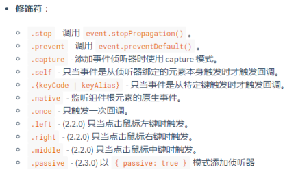
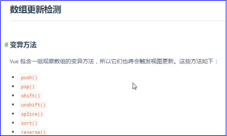
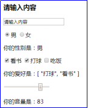
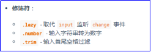

原文连接:https://www.cnblogs.com/rope/p/10731900.html
一、单页面应用（SPA）
1.1 C/S到B/S页面架构的转变
C/S：客户端/服务器（Client/Server）架构的软件。
C/S 软件的特点：
① 从window桌面双击打开
② 更新的时候会替换原有的，原有的必须删除，不能刷新。
③ 在其他的设备上使用的时候，也要安装软件。
B/S ：浏览器和服务器（Browser/Server）架构
B/S 软件的特点：
不需要安装任何的客户端，是通过浏览器输入网址打开的。
更新的时候不需要重新安装软件，你只需要刷新页面，程序就能更新。
在其他设备端，不需要安装任何其他的软件，浏览器足可以解决所有的问题。

Dashboard叫做仪表盘项目，通俗的讲就是***管理平台。比如进销存管理平台、汽车销售管理平台、宠物店管理平台。
特点1：这种项目几乎都是单页面应用（Single Page Application）简称SPA
将原来PC桌面的应用程序，放到浏览器中实现。现在的用人需求很大，不管是政府机构、教育机构、外包机构、销售机构都在开发自己的新项目，或者把老项目搬到网页上。比如阿里云的管理平台，特别像桌面的app，现在是在浏览器中实现的。
所有页面的URL网址，只有#后面的内容在变化，而#之前的内容没有变化，整个项目就是一个html页面。
|
|
|
网页没有发生跳转，而是DOM的整体上树、下树。这样的好处是，让本地变量可以在本地持久的时间变长。使用页面内的锚点hash符号来标记的路由，也就是说点击任何链接，页面实际上没有任何跳转，所有页面的改变都是JS完成的，JS命令一些组件消失，命令新的一些组件上树。所以称为“单页面应用”。
页面的URL没有变化，变化的只是hash符号后面的部分：
特点2：都是组件化的
两个不同的页面中（实际上是一个页面），都有日期选择框，发现日期选择框都是相同的，我们叫做“组件（components）”。
|
|
|
也就是说，这些日历组件，不管是HTML、CSS、JavaScript都能复用。
下图中的每一个红框都可以认为是组件：
特点3：所有的DOM元素都是动态上下树的
查看页面源代码，发现页面上的所有DOM结构都不在源代码中，也就是说DOM结构是JavaScript程序控制上树的，所有的部件，都是组件、组件嵌套组件、集体被JavaScript上树。
总结，一个好的单页面应用的框架，必须要能提供：
l 优秀的路由机制，能捕获用户URL中hash部分，决定什么组件显示和隐藏；
l 用JavaScript控制组件动态上树、下树的能力；
l 组件的创建、复用、嵌套能力；
l 组件的数据传递的能力。
1.2三大框架的出现
Angular、React、Vue都是做什么的？
它们都是JS架构，都是用来做单页面应用设计的。
Angular
AngularJS 诞生于2009年，由Misko Hevery 等人创建，后为Google所收购。是一款优秀的前端JS框架，已经被用于Google的多款产品当中。Angular是第一个实现“数据变化，视图自动变化”的框架，并且首创了组件化开发模式。Angular有着诸多特性，最为核心的是：MVC、模块化、自动化双向数据绑定、语义化标签、依赖注入、服务、控制器等等。
Angular的出现，有了前端的组件化。
前端的组件化开发：它是一种易于插拔，模块化的开发形式。HTML、CSS、JS逻辑都封装到一个组件中，在其他的页面可以轻松地显示。
Angular是AMD模式，项目需要使用require.js配合，和时代的CMD主流背道而驰，2015年开始落寞了。Angular2016年出了2，2017年出了4、5，都是CMD模式的，但是用户已经不买账了。
React
React 起源于 Facebook 的内部项目，因为该公司对市场上所有 JavaScript MVC 框架，都不满意。就决定自己写一套，用来架设Instagram 的网站。做出来以后，发现这套东西很好用，就在2013年5月开源了。
React主要用于构建UI。你可以在React里传递多种类型的参数，如声明代码，帮助你渲染出UI、也可以是静态的HTML DOM元素、也可以传递动态变量、甚至是可交互的应用组件。
React非常轻，只提供了少量了API，和相关的组件。
React可以Redux、Flux等框架配合使用。
React 使用 Virtual DOM技术，使他渲染更快速，内存开销小。
React是CMD模式的，并且创造性的和webpack进行合作，将所有的js代码实时构建为一个js文件，编程的时候非常的清爽，非常利于团队合作，所以大量的用户就开始使用React开发自己的项目。
Vue
Vue是中国人尤雨溪发明的，它的数据驱动视图的实现是最优雅的。它是一个集大成者，集成了Angular和React的优点，摒弃了它们的缺点。是一个构建数据驱动的 web 界面的渐进式框架。Vue.js 的目标是通过尽可能简单的 API 实现响应的数据绑定和组合的视图组件。它不仅易于上手，还便于与第三方库或既有项目整合。
Vue的作者，发现了JS的一个神奇之处，Object.defineProperty的作用，可以用于视图的更新。
AngularJS实现的机理是脏检查。
React 是setState()。
二、Vue介绍
2.1官网和作者
Vue是一门mvvm的框架，继承了Angular的双向数据绑定和指令的优点，继承了React的快速制作组件的能力，同时也拥有非常类似与Redux的单向数据流动的思想，最主要Vue的api都是中文的，非常好学。
2.2 Vue是一门mvvm框架
MVVM框架：一切的视图都是和数据相关联的。数据变化了，视图就自动变化。而不需要控制器去命令模块做什么然后渲染什么视图。
React、Vue、Angular都是简化了模块化开发，这些MVVM框架到底简化了什么：
1）组件方便创建了（创建一个组件只需要写一个类或者一个函数）
2）组件的可插拔性高
3）组件的数据传输简单了
4）路由，单页面应用的hash路由
5）只关心数据，不关心DOM
数据叫做model（模型），因为对数据的所有操作都是模型的任务；视图叫做view。在MVVM中出现了view-model这个层，它可以“监听”model 的任何改变，让视图自动变化。从而我们不需要关心DOM操作，只需要关心数据的变化即可。
React、Vue、Angular中都提供了view-model层。
比如，数据：
[
{"id":1,"name":"小明","age":12},
{"id":2,"name":"小红","age":12},
{"id":3,"name":"小强","age":12},
]它有对应的DOM结构：


<table>
<tr>
<td>1</td>
<td>小明</td>
<td>12</td>
</tr>
<tr>
<td>2</td>
<td>小红</td>
<td>12</td>
</tr>
<tr>
<td>3</td>
<td>小强</td>
<td>12</td>
</tr>
</table>第一次根据数据创建DOM是非常简单的，但是如果数据发生变化，我们必须要手动调整DOM的变化。
非常的不方便，尤其是系统很大的时候，不方便。
此时MVVM模式，就能简化这些操作：数据一变化，DOM自动变化。
除了MVC、MVVM模式，还有MVP。统称MV*模式。
React、Vue、Angular中都提供：
1）路由能力、组件的管理能力、组件的嵌套能力、组件的数据传递能力；
2）数据变化视图自动变化。
2.3 Vue的虚拟DOM
Virtual DOM是什么呢？
Vue.js(2.0版本)与React的其中最大一个相似之处，就是他们都使用了一种叫’Virtual DOM’的东西。所谓的Virtual DOM基本上说就是它名字的意思：虚拟DOM，DOM树的虚拟表现。它的诞生是基于这么一个概念：改变真实的DOM状态远比改变一个JavaScript对象的花销要大得多。
Virtual DOM是一个映射真实DOM的JavaScript对象，如果需要改变任何元素的状态，那么是先在Virtual DOM上进行改变，而不是直接改变真实的DOM。当有变化产生时，一个新的Virtual DOM对象会被创建并计算新旧Virtual DOM之间的差别。之后这些差别会应用在真实的DOM上。
2.4用src引包体验Vue魅力
src引入vue.js（现在不是webpack进行CMD规范的构建）来快速认知。
通过vuejs的包学习基础语法，然后再用webpack。
<!DOCTYPE html>
<html lang="en">
<head>
<meta charset="UTF-8" />
<title>Document</title>
</head>
<body>
<div id="app">
<h1>{{a}}</h1>
</div>
</body>
<script type="text/javascript" src="js/vue.js"></script>
<script type="text/javascript">
//Vue所有的组件都是内部创建的，这里是唯一一次new Vue()
//不管项目有多大，组件有多少个，一定只有一个new Vue()。
//这是一个实例
new Vue({
el:"#app", //挂载点
data:{
a : 100
}
})
</script>
</html>首先认知一个事情：Vue和React的区别，Vue在写实例，React在写类。
MVVM框架：一切的视图都是和数据相关联，数据变化，视图就自动变化。
2.5 Vue视图更新原理
<body>
<div id="app">
<h1>{{a}}</h1>
<button v-on:click="add">加</button>
<button v-on:click="minus">减</button>
</div>
</body>
<script type="text/javascript" src="js/vue.js"></script>
<script type="text/javascript">
//Vue所有的组件都是内部创建的，这里是唯一一次new Vue()
//不管项目有多大，组件有多少个，一定只有一个new Vue()。
//这是一个实例
new Vue({
el:"#app", //挂载点
data:{
a : 100
},
methods:{
add(){
this.a++
},
minus(){
this.a--
}
}
})
</script>现在数据变化了，视图就自动变化，这是MVVM框架的最大特点。
因为Vue做数据和视图相关变化，原理是“数据劫持”。Object.defineProperties()。定义Vue中组件对象data中的所有变量的setter，让他们在被设置的时候，刷新相关视图。
<body>
<button>按我</button>
</body>
<script type="text/javascript">
var obj = { //只要这个对象被赋值，立马触发set函数
a : 100
}
Object.defineProperties(obj, {
a : {
set:function(){
alert("你在修改a"); //监听这个属性被重新赋值
},
get:function(){
alert("你在读取a");
}
}
})
document.getElementsByTagName("button")[0].onclick = function(){
obj.a++; //obj.a的值变化Object.defineProperties()函数的set和get就能拦截到
}
</script>三、配置webpack和安装vue
3.1配置webpack
Vue 提供了一个官方的 CLI，可以瞬间创建一个项目，但是初学者别用cli起步，先自己手动配置。
webpack中文网：https://doc.webpack-china.org/configuration/
Vue和React都是CMD架构（import和export），但目前所有浏览器都不支持CMD规范
所以现在Vue和React的项目都用webpack打包。用webpack打包只是暂时的，也许在几年内前端就不用webpack了。
第一步：先创建项目文件夹，配置webpack的CMD规范，创建package.json文件
安装webpack
npm install -g webpack@4.9.1
webpack4.0以上版本都要安装webpack-cli依赖
npm install -g webpack-cli
安装 webpack-dev-server，这是一个前端的模拟小服务器，写不了接口，但是能静态化文件夹。
npm install -g webpack-dev-server配置webpack.config.js文件（复制官网的配置）

webpack 4.0以上版本必须增加mode属性，它有两个值：
l production （上线版）
l development （开发版）
开发时，设置mode属性为development，要不然就混淆加密打包很慢。
const path = require('path');
module.exports = {
//程序的入口文件
entry: "./www/app/app.js",
//程序的出口（打包的文件）
output : {
//打包文件输出的路径
path : path.resolve(__dirname, "www/dist"),
//打包文件的名称
filename : "all.js",
publicPath:"/public/" //这是对webpack-dev-server的配置，配置虚拟路径
},
//让webpack监听变化，自动打包
watch : true,
mode : "development",
//配置webpack的模块插件
module:{
//关于模块的配置规则
rules : [{
//模块规则（配置 loader、解析器等选项）
test : /\.js$/, //解析的时候匹配到的都是js文件
include: [
path.resolve(__dirname, "www/app") //翻译什么文件夹
],
exclude: [
path.resolve(__dirname, "node_modules") //不翻译什么文件夹
],
// loader : "babel-loader",
// options : {
// presets : ["es2015","es2016"]
// }
}]
}
}publicPath是webpack-dev-server在内存中生成的临时文件夹（项目中物理磁盘上没有这个文件夹），并且把/public/all.js文件路由到了打包的文件，是为了编译速度更快，还能保护硬盘，同时webpack-dev-server提供了前端服务器，端口自定义。
然后启动项目：
webpack-dev-server --content-base ./www --port 8080--content-base表示以www文件夹作为一个静态化根目录
--port 表示端口号
以上启动命令很繁琐，我们可以在package.json中，配置一个快速启动命令：
{
"name": "vue_study",
"version": "1.0.0",
"description": "",
"main": "index.js",
"scripts": {
"test": "echo \"Error: no test specified\" && exit 1",
"dev" : "webpack-dev-server --content-base ./www --port 8080"
},
"author": "",
"license": "ISC"
}
以后项目直接可以用以下命令启动：
npm run dev
以后项目打开http://127.0.0.1:8080，不要直接双击index.html页面了。
webpack-dev-server在做了两件事：
1) 在打包js文件
2) 静态化www文件夹，说白了就是帮我写了一个app.use(express.static('www'))
index.html文件，要改变script的src引用：
<!DOCTYPE html>
<html lang="en">
<head>
<meta charset="UTF-8" />
<title>Document</title>
</head>
<body>
</body>
<script type="text/javascript" src="public/all.js"></script>
</html>3.2安装配置Vue
接下来，配置Vue，只需要5个依赖就能起步：
vue、vue-loader（安装Vue时会提醒你安装css-loader、vue-template-compiler）
npm install --save vue
安装其它4个开发依赖：
npm install --save-dev vue-loader
npm install --save-dev css-loader
npm install --save-dev vue-style-loader
npm install --save-dev vue-template-compiler注意：什么是loader。
webpack在打包的时候，顺便做的事情，就是loader。
5个依赖的作用：
vue 核心（语法）
css-loader 让webpack能识别样式表，打包样式表到index页面中
vue-style-loader 识别内嵌样式表
vue-loader 识别.vue组件文件的
vue-template-compiler 识别<template></template>的
babel-loader是翻译ES6语法的，无需安装，因为vue-loader中含有babel-loader
补充webpack的vue配置：
配置webpack.config.js，这里手册很坑，是两个地方告诉你怎么配置resolve和module两个属性。
resolve属性：https://cn.vuejs.org/v2/guide/installation.html
module属性：https://vue-loader-v14.vuejs.org/zh-cn/options.html#loaders
var path = require('path');
const {VueLoaderPlugin} = require("vue-loader"); //最新版webpack需要引入此插件
module.exports = {
//程序的入口文件
entry: './www/app/main.js',
//程序的出口文件（被打包的文件）
output: {
//打包文件输出的路径
path: path.resolve(__dirname, './www/dist'),
//打包文件的名称
filename: 'all.js',
//这是对webpack-dev-server的配置，是一个虚拟路径
// publicPath:"public" //这是对webpack-dev-server的配置，配置虚拟路径
},
//自动监听
watch:true,
mode : "development",
//配置webpack的模块插件
module:{
// 关于模块配置
rules: [
// 模块规则（配置 loader、解析器等选项）
{
test: /\.js?$/, //解析的时候匹配到的都是js文件
include: [path.resolve(__dirname, "www/app")], //翻译什么文件夹中的文件
exclude: [path.resolve(__dirname, "node_modules")], //不翻译什么文件夹
// loader: "babel-loader",
// //翻译字典
// options: {
// presets: ["es2015","es2016"]
// }
},
{
test: /\.vue?$/, //解析的时候匹配到的都是js文件
include: [path.resolve(__dirname, "www/app")], //翻译什么文件夹中的文件
exclude: [path.resolve(__dirname, "node_modules")], //不翻译什么文件夹
loader: "vue-loader"
},
{
test: /\.css?$/, //解析的时候匹配到的都是js文件
include: [path.resolve(__dirname, "www/app")], //翻译什么文件夹中的文件
exclude: [path.resolve(__dirname, "node_modules")], //不翻译什么文件夹
use: ["vue-style-loader","css-loader"]
}
]
},
resolve: {
alias: { //配置别名
'vue$': 'vue/dist/vue.esm.js' // 用 webpack 1 时需用 'vue/dist/vue.common.js'
}
},
//最新版webpack需要引入此插件
plugins:[
new VueLoaderPlugin()
]
};蓝色部分是配置loader必须的语法，所有以.vue结尾的文件都是vue-loader处理
红色是vue必须的配置
在main.js文件写vue的hello world！
import Vue from "vue";
new Vue({
el:"#app",
data:{
a:100
}
});
index.html
<!DOCTYPE html>
<html lang="en">
<head>
<meta charset="UTF-8" />
<title>Document</title>
</head>
<body>
<div id="app">
<h1>{{a}}</h1>
</div>
</body>
<script type="text/javascript" src="dist/all.js"></script>
</html>
重启webpack能看看见100，说明配置成功了。
四、Vue指令
下面正式学习vue，先从指令开始学起。官网指令API地址：https://cn.vuejs.org/v2/api/
Vue中所有的指令都是v-开头的。
指令系统的原理就是正则表达式，所有的指令的值都是引号包裹（引号是正则表达式工作的定界符），正则表达式会进行提取，然后执行。所以不要认为引号中的值是字符串，里面的内容是“活”的。
4.1模板插值
4.1.1 v-text模板插值
{{}}和v-text指令是完全等价的。

index.html
<div id="app">
<h1 v-text="a"></h1>
<h1>{{a}}</h1>
<h1>{{100 * 100}}</h1>
<h1>{{parseInt(Math.random() * 100)}}</h1>
<h1>{{arr.reduce((a,b)=> a+b)}}</h1>
<h1>{{ 3 > 8 ? 5 : 10000 }}</h1>
</div>
main.js
import Vue from 'vue';
new Vue({
el : "#app",
data : {
a : 100,
arr : [100,200,300]
}
})重点注意：
{{}}中只能写表达式，不能写语句。
什么是表达式，调用函数时，可以称为实参的东西，就是表达式。
{{}}中能够写：
简单运算
函数的调用
三元运算符
filter、map、reduce等函数
Math对象、Date对象、Number()构造函数
不能写：
for()语句
if语句
4.1.2 v-html
v-text不能识别DOM元素，只能用v-html
index.html
<div id="app">
<h1 v-html="a"></h1>
<h1 v-html="b"></h1>
</div>
main.js
import Vue from 'vue';
new Vue({
el : "#app",
data : {
a : '<h1 style="color:red;">哈哈</h1>',
b : '<input type="text" />'
}
})将data中的数据，进行html转换，样式写在行内。
4.2 v-on事件指令
4.2.1鼠标事件
表示添加事件监听，v-on叫指令 :click叫参数。“v-on:”可以简写为“@”
<div id="app">
<h1>{{a}}</h1>
<button @click='add'>按我+</button>
<button v-on:click='add'>按我+</button>
<button v-on:mouseenter='add'>触摸+</button>
<button v-on:dblclick='jian'>双击-</button>
</div>
main.js
import Vue from 'vue';
new Vue({
el : "#app",
data : {
a : 100
},
methods : {
add(){
this.a++
},
jian(){
this.a--
}
}
})<button v-on:click.once='add'>只触发一次+</button>
4.2.2键盘事件
index.html
<div id="app">
<input type="text" v-on:keydown.13='tijiao($event)'>
<input type="text" v-on:keyup.enter='haha'>
</div>
main.js
import Vue from 'vue';
new Vue({
el : "#app",
data : {
},
methods : {
tijiao(e){
console.log(e.target.value)
},
haha(){
alert("回车键松开了")
}
}
})当按下回车键的时候，触发methods的方法，监听键盘按键时，修饰符是13（表示回车键）
如果需要用event事件对象，传入$event即可。
内置按键修饰符有很多
https://cn.vuejs.org/v2/guide/events.html
4.3 v-bind动态指令
v-bind可以将值变成“动态”的
v-bind:什么属性都可以，并且“v-bind:”可以简写成“:”
比如：
v-bind:value
v-bind:style
v-bind:class
v-bind:name
v-bind:alt
v-bind:disable
v-bind:title
v-bind:src4.3.1 v-bind:class对象语法
index.html
<head>
<style type="text/css">
.cur{color:red;}
.bgcur{background:pink;}
</style>
</head>
<body>
<div id="app">
<h1 v-bind:class="{cur:true, bgcur:true}">哈哈</h1>
<h1 v-bind:class="{cur:isClass, bgcur:isBgClass}">哈哈</h1>
<button @click="changeClass">按我切换</button>
</div>
</body>
main.js
import Vue from 'vue';
new Vue({
el : "#app",
data : {
isClass:true,
isBgClass:true
},
methods : {
changeClass(){
this.isClass = !this.isClass;
this.isBgClass = !this.isBgClass;
}
}
})4.3.2 v-bind:class数组语法
index.html
<div id="app">
<h1 v-bind:class="['cur', 'bgcur']">哈哈</h1>
<h1 v-bind:class="[isClass,isBgClass]">哈哈</h1>
<button @click="changeClass">按我切换</button>
</div>
main.js
import Vue from 'vue';
new Vue({
el : "#app",
data : {
isClass:'cur', //类名
isBgClass:'bgcur' //类名
},
methods : {
changeClass(){
this.isClass = !this.isClass;
this.isBgClass = !this.isBgClass;
}
}
})4.3.3 v-bind:style对象语法
注意：这些值需要用引号包裹，否则会认为它是一个函数：
index.html
<div id="app">
<h1 v-bind:style="{background:'red'}">哈哈</h1>
<h1 :style="{background:'red'}">哈哈</h1>
<h1 :style="{background:`rgb(${r}, ${g}, ${b})`}">哈哈</h1>
</div>
main.js
import Vue from 'vue';
new Vue({
el : "#app",
data : {
r : 100,
g : 200,
b : 255
}
})4.3.4 v-bind:style数组语法
index.html
<div id="app">
<h1 :style="[{'background':'red', 'fontSize':'50px'}]">哈哈</h1>
<h1 :style="[obj]">哈哈</h1>
</div>
main.js
import Vue from 'vue';
new Vue({
el : "#app",
data : {
obj : {
'background':'red',
'fontSize':'50px'
}
}
})4.3.5 v-bind:其他属性
index.html
<div id="app">
<img :src="url" >
<a :href="link">百度</a>
<button :disabled="b">按钮</button>
<input type="text" :value="a">
<input type="text" :placeholder="a">
<div :style="yangshi"></div>
<h1 :class="leiming">文字</h1>
</div>
main.js
import Vue from 'vue';
new Vue({
el : "#app",
data : {
a : 100,
b : "disabled",
url : "images/baby1.jpg",
link: "http://www.iqianduan.cn",
yangshi : {
"background": 'orange',
"width":'100px',
"height":'100px',
},
leiming : {
"da" : true,
"xie" : false,
"hong" : true
}
}
})4.4 v-if和v-else上下树
v-if是控制DOM上下树的，v-if为true则上树，false则下树。
v-else必须紧跟着v-if，中间不能有任何间隔，否则报错，如果有间隔可以使用两个v-if让他们互反。
index.html
<div id="app">
<h1 v-if="isShow">如果</h1>
<h2 v-else="isShow">否则</h2>
<button @click="showClick">按我</button>
</div>
main.js
import Vue from 'vue';
new Vue({
el : "#app",
data : {
isShow:true
},
methods : {
showClick(){
this.isShow = !this.isShow;
}
}
})
v-if和v-else有间隔就报错：
解决方法：用两个if
<h1 v-if="isShow">如果</h1>
<h2 v-if="!isShow">否则</h2>
<button @click="showClick">按我</button>4.5 v-show显示/隐藏
v-show是控制DOM的隐藏和显示，原理是CSS的display:none和block
index.html
<div id="app">
<h1 v-show="isShow">哈哈</h1>
<h1 v-show="!isShow">嘿嘿</h1>
<button @click="showClick">{{isShow ? "按我消失" : "按我显示"}}</button>
</div>
main.js
import Vue from 'vue';
new Vue({
el: "#app",
data: {
isShow : true
},
methods:{
showClick(){
this.isShow = !this.isShow
}
}
})一般来说，v-if有更高的切换开销，而v-show有更高的初始渲染开销。
因此，如果需要非常频繁的切换，使用v-show较好，如果在运行时条件很少改变，则使用v-if较好。
4.6 v-for循环指令
用来循环某一个元素，数据必须是数组或类数组对象，使用of或in关键字。
4.6.1循环数组
index.html
<div id="app">
<ul>
<li v-for="item in arr" :key="item">{{item}}</li>
</ul>
<ul>
<li v-for="(item,index) in arr" :key="item">{{item}} {{index}}</li>
</ul>
<table>
<tr v-for="(item,index) in students" :key="item.id">
<td>{{item.id}}</td>
<td>{{item.name}}</td>
<td>{{item.age}}</td>
</tr>
</table>
</div>
main.js
import Vue from 'vue';
new Vue({
el : "#app",
data : {
arr : ["苹果","鸭梨","桃子","西瓜"],
students : [
{"id":1001, "name":"小明", "age" :12},
{"id":1002, "name":"小红", "age" :13},
{"id":1003, "name":"小刚", "age" :14}
]
}
})
index的下标是从0开始
4.6.2循环对象
main.js
import Vue from 'vue';
new Vue({
el : "#app",
data : {
obj : {"name":"小明","sex":"男","age":12}
}
})
index.html
<div id="app">
<ul>
<li v-for="(item,key,index) in obj" :key="index">
{{index}}
{{key}}
{{item}}
</li>
</ul>
</div>4.6.3循环常数
index.html
<div id="app">
<ul>
<li v-for="(item,index) in 10">
{{item}} {{index}}
</li>
</ul>
</div>循环常数，item是从1开始迭代，index是从0开始。
https://cn.vuejs.org/v2/guide/list.html#key
九九乘法表：
<div id="app">
<table border="1">
<tr v-for="i in 9">
<td v-for="j in 9" v-show="i >= j">
{{i}} * {{j}} = {{i * j}}
</td>
</tr>
</table>
</div>
这些数组方法会重新出发v-for视图更新渲染：
index.html
<div id="app">
<input type="text" @keyup.enter="tijiao" v-model="txt">
<ul>
<li v-for="item in arr">{{item.title}}</li>
</ul>
</div>
main.js
import Vue from 'vue';
new Vue({
el : "#app",
data : {
arr : [],
txt : ''
},
methods :{
tijiao(){
this.arr.push({"title" : this.txt}) //把输入的内容插入到数组，会重新渲染视图
this.txt = ''
}
}
})4.7 v-model双向数据绑定
双向数据绑定借鉴了Angular。所有表单元素（单选、文本框、复选）等都能用v-model双向和data绑定！
v-model帮表单元素在内部做了两个事情：
1）添加了监听
2）添加了value值
l 受控就是双向绑定：控件从data要值，控件要变化，就改变data的值
在React中做表单控件的受控，要写value={}和onChange={};
但是在vue中，只需使用v-model将实现快速的数据双向绑定。
https://cn.vuejs.org/v2/guide/forms.html
4.7.1 input的双向数据绑定
index.html
<body>
<div id="app">
<h3>{{a}}</h3>
<input type="text" v-model="a">
<p>
<input type="radio" name="sex" v-model="b" value="男">男
<input type="radio" name="sex" v-model="b" value="女">女
</p>
<p>你的性别是：{{b}}</p>
<p>
<input type="checkbox" v-model="c" value="看书">看书
<input type="checkbox" v-model="c" value="打球">打球
<input type="checkbox" v-model="c" value="吃饭">吃饭
</p>
<p>你的爱好是：{{c}}</p>
<p><input type="range" max="100" v-model="d"></p>
<p>你的音量是：{{d}}</p>
</div>
</body>main.js
import Vue from "vue";
new Vue({
el:"#app",
data:{
a:"请输入内容",
b:"男",
c:["打球","看书"],
d:30
}
})
4.7.2 input-number
index.html
<div id="app">
<h1>{{num}}</h1>
<h1>{{typeof num}}</h1>
<input type="number" v-model.number="num">
<h1>{{txt}}</h1>
<input type="text" v-model.trim='txt'>
</div>
main.js
import Vue from 'vue';
new Vue({
el : "#app",
data : {
num : 0,
txt : ''
}
})|
默认类型：
|
输入内容修改后类型：
|
v-model添加修饰符限制类型：
<input type="number" v-model.number="num">
input添加.trim修饰符，能过滤首位的空格，中间的不行。
<input type="text" v-model.trim="num">
在“change”时而非“input”时触发：
<input v-model.lazy="txt" >4.7.3 textarea
微博发布框：文本输入框如果超出140字时，动态添加一些类和属性，字体变红，按钮不可点击。
index.html
<style type="text/css">
.danger{color:red;}
</style>
<div id="app">
<textarea cols="30" rows="10" v-model='txt'></textarea>
<span :class="{danger: txt.length > 140}">当前共{{txt.length}}字/140字</span>
<button :disabled="txt.length == 0 || txt.length > 140">发布</button>
<button :disabled="txt.length == 0" @click="clear">清空</button>
</div>
main.js
import Vue from 'vue';
new Vue({
el: "#app",
data: {
txt:""
},
methods : {
clear(){
this.txt= ""
}
}
})4.7.4双向数据绑定-受控的列
index.html
<div id="app">
<div>
<label><input type="checkbox" value="id" v-model="showCols">学号</label>
<label><input type="checkbox" value="name" v-model="showCols">姓名</label>
<label><input type="checkbox" value="sex" v-model="showCols">性别</label>
<label><input type="checkbox" value="age" v-model="showCols">年龄</label>
</div>
<table>
<tr>
<th v-show="showCols.includes('id')">学号</th>
<th v-show="showCols.includes('name')">姓名</th>
<th v-show="showCols.includes('sex')">性别</th>
<th v-show="showCols.includes('age')">年龄</th>
</tr>
<tr v-for="item in arr">
<td v-show="showCols.includes('id')">{{item.id}}</td>
<td v-show="showCols.includes('name')">{{item.name}}</td>
<td v-show="showCols.includes('sex')">{{item.sex}}</td>
<td v-show="showCols.includes('age')">{{item.age}}</td>
</tr>
</table>
</div>main.js
import Vue from 'vue';
new Vue({
el : "#app",
data : {
showCols : ['id', 'name', 'sex', 'age'],
arr : [
{"id":1001, "name":"小明","sex":"男","age":12},
{"id":1002, "name":"小红","sex":"女","age":13},
{"id":1003, "name":"小花","sex":"女","age":14},
{"id":1004, "name":"小刚","sex":"男","age":15},
{"id":1005, "name":"小黑","sex":"男","age":16}
]
}
})